2020 – 2021
- Discovered programming through an introductory Python course on edX
- Excelled in my university’s Data Science course, which sparked my interest in the field
- Earned the AWS Certified Cloud Practitioner certification
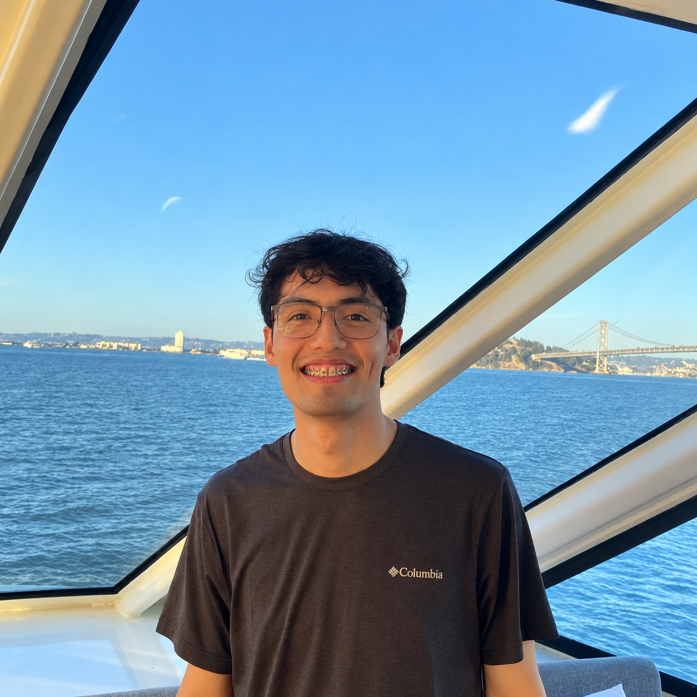
Connecting the dots.
2020 – 2021
2022
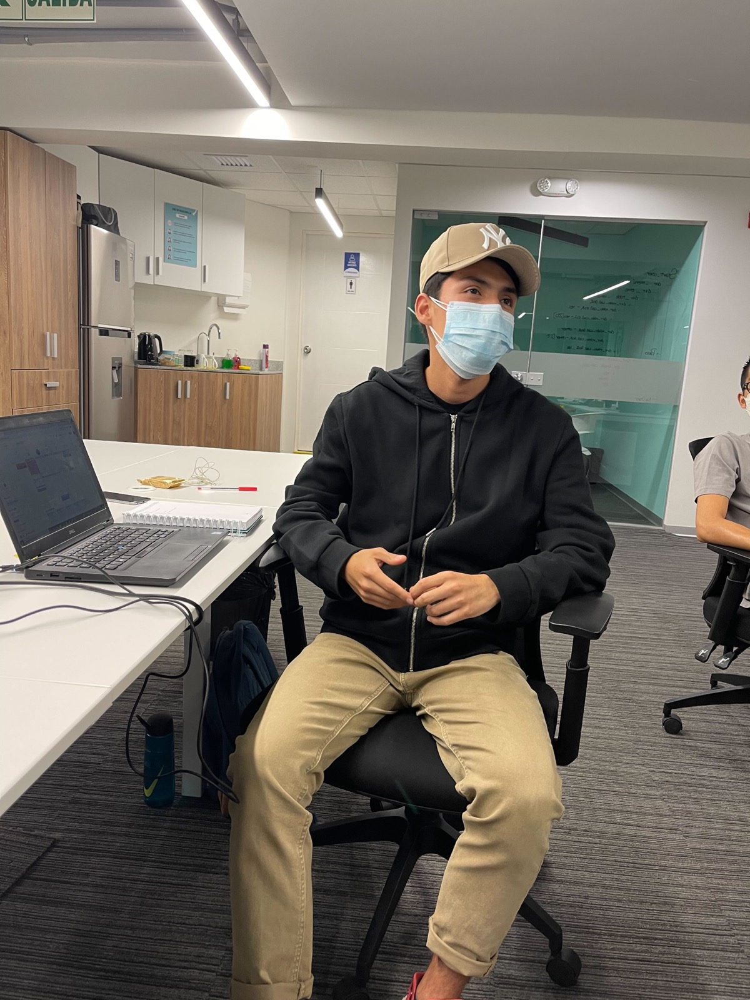
2023
Reduced Weekly Business Review metric update time from about four hours to 30 minutes by restructuring data dependencies and moving an Airflow DAG to a larger warehouse, giving senior executives timely access to key performance insights.
Automated daily processing of Prime raw data with an Airflow pipeline that ran SQL scripts in sequence to build production tables, giving the Data Science team up-to-date inputs for models reaching about one million users.
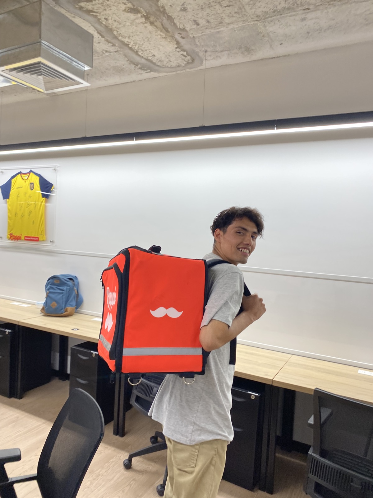
2024
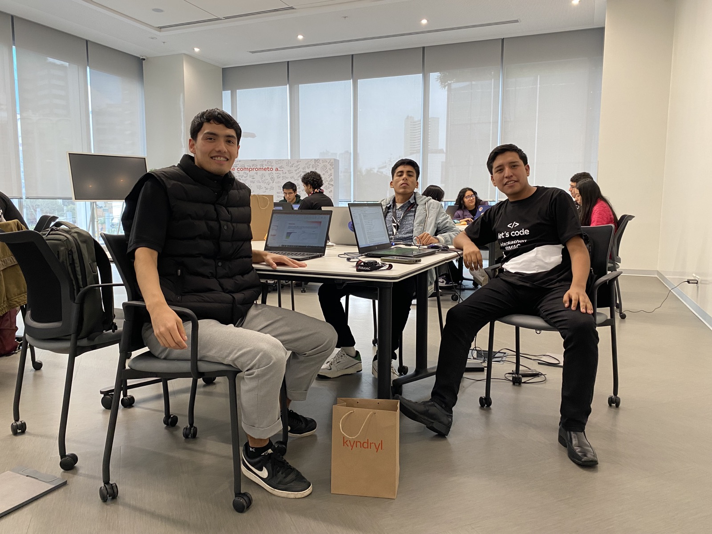
2025
Standardized demand matrix submissions from 16 law firms with Excel validation and Python checks, achieving 100% data accuracy.
Built the division’s first Power App for debtor visit reports, with Power Automate alerts tracking more than 34 monthly visits across five executives.
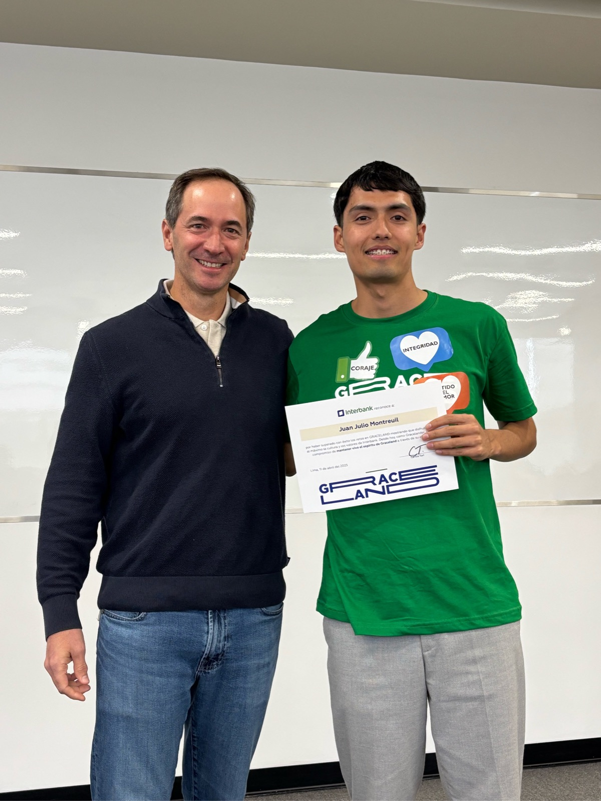
Jan – Mar 2026
Migrated more than 10 data pipelines from AWS Lambda to AWS Glue ETL with Spark, improving scalability and execution time through automated schema discovery.
Automated CI/CD for three Data Science applications using GitHub Actions and Terraform: speech analytics for bot conversations, speech analytics for AWS Connect calls, and classification of outbound campaign feedback.
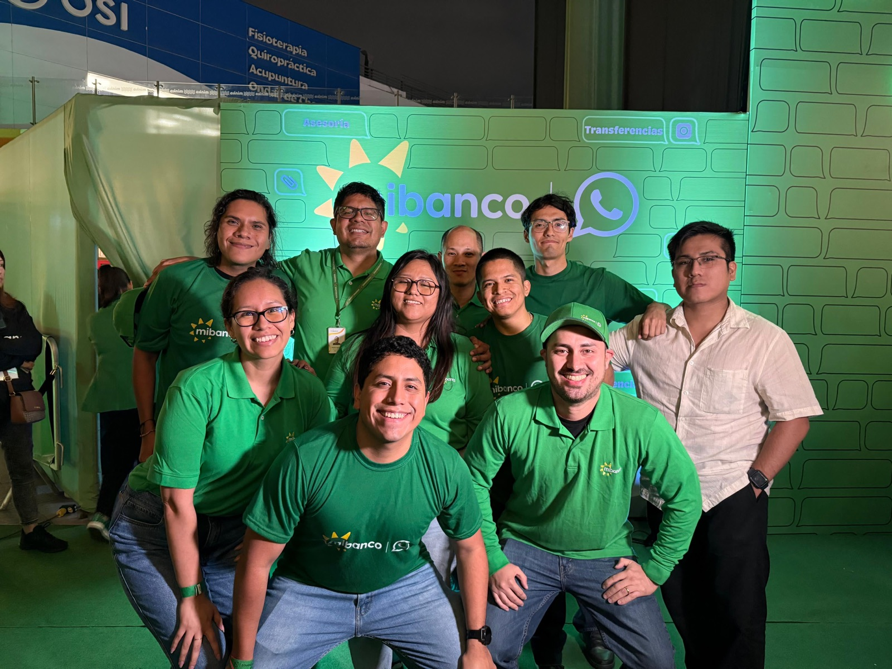
Apr – May 2026
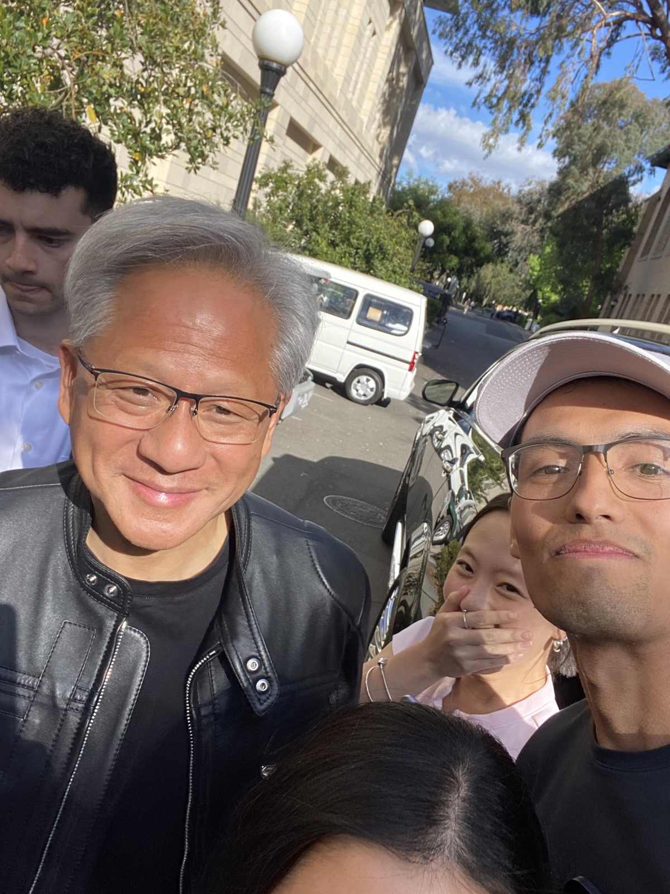
Jun 2026
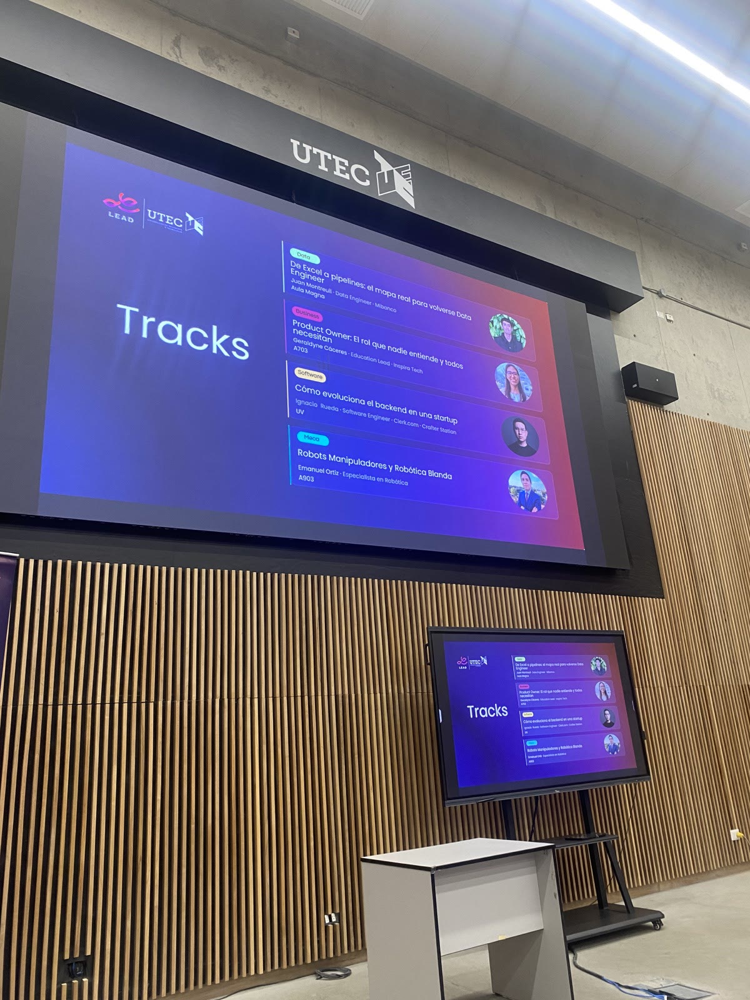
A few things I’ve shipped, built with taste, a little sweetness, and coffee ☕.
Mibanco por
WhatsApp
Building data infrastructure for a neobank with 2 million cumulative conversations.
60K+ users
Gym, three times a week
Eating healthy food
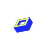
AI Playgrounds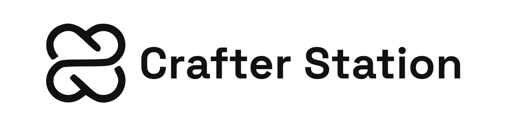
Hackathons, meetups, and events with people who love to build.
Agentic engineering
AWS Nanodegree at Udacity
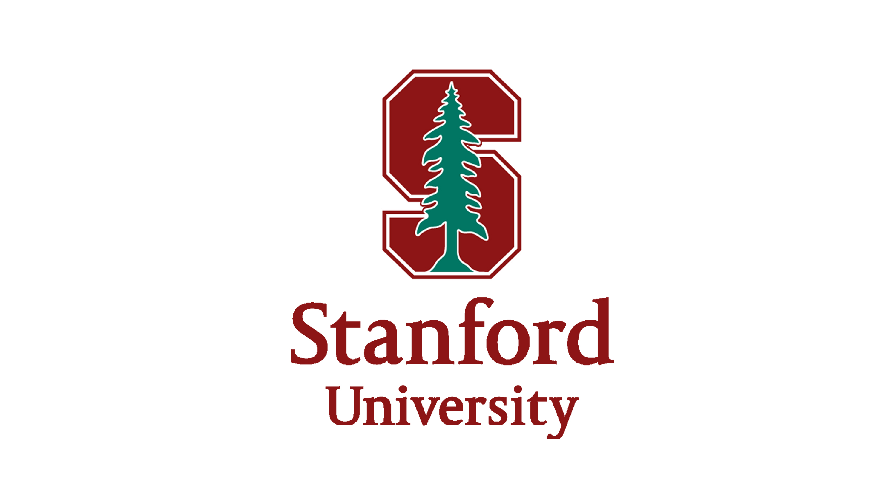
Probability for AI
Stanford Code in Place program
Master’s in Data Science
Universidad Nacional de Ingeniería
San Francisco
Tech Week